宮崎の香りを、贈る。
ほぼ市場に出回らない
国産・生胡椒
という選ばれし調味料
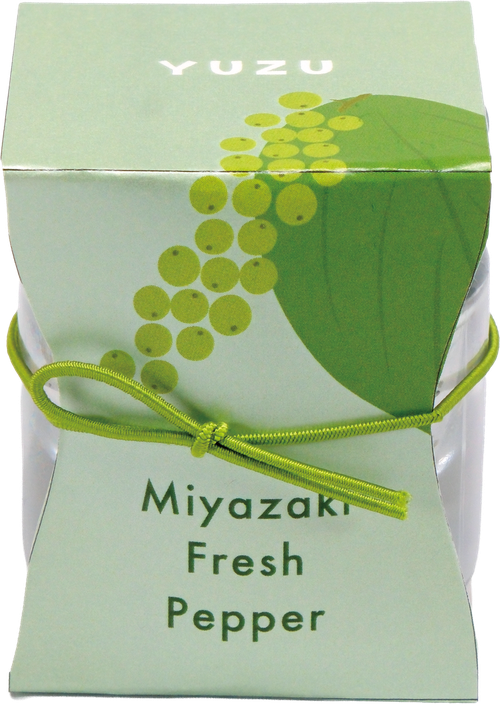
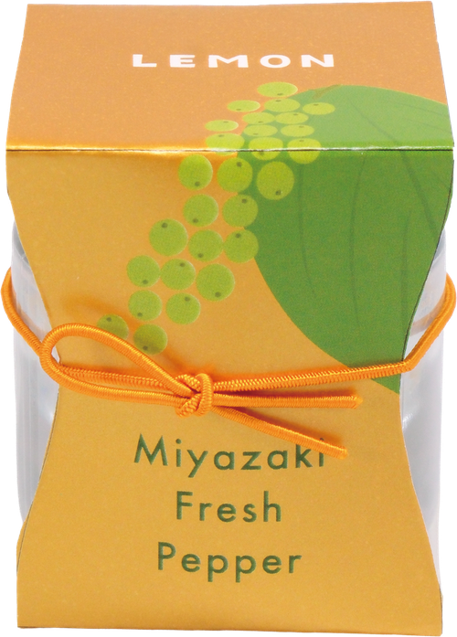
日本初！
国産生胡椒スパイス
- 宮崎県産生胡椒
- 宮崎県産柚子/レモン
- 国産塩
食にこだわりのある人ほど、本当に喜ぶギフトは少ないものです。
これは、「それ何？」から会話が始まり、味まで語れる、新しい食体験。
国産の生胡椒に、柚子とレモンを添えた、これまでにないスパイスです。
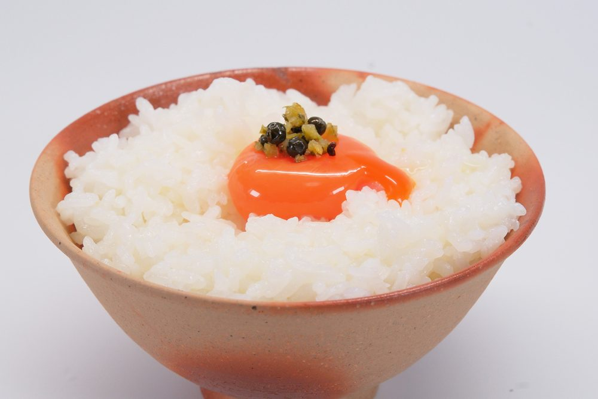
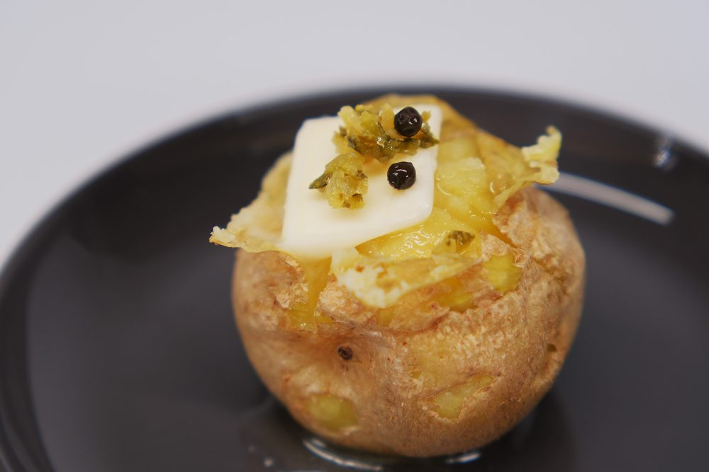
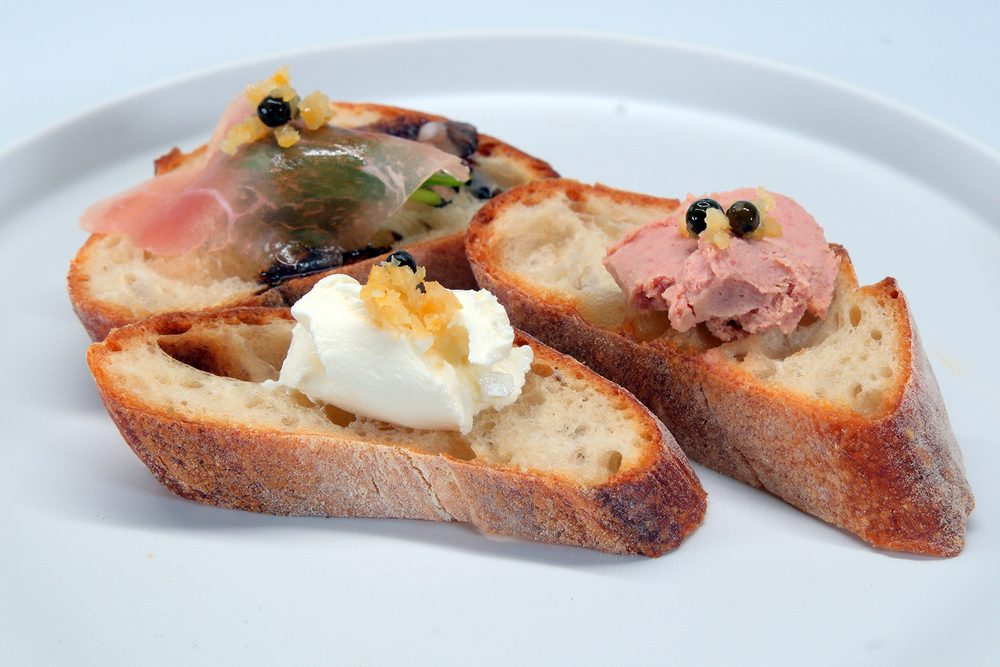
私たちが届けたいのは、ただの「胡椒」ではありません。
日本ではほとんど流通していない、“生のままの胡椒”です。
実は…
日本の生胡椒の流通は…
ほぼ0%
と言えるほど希少です。つまりこの胡椒は、
日本ではほとんど出会えない
スパイスなのです。
Made in Miyazaki
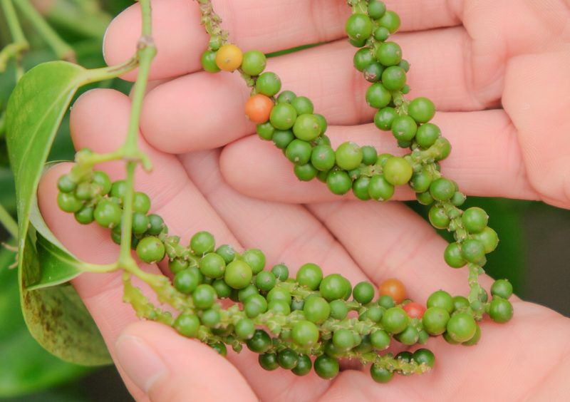
プチッとはじける、未体験の衝撃
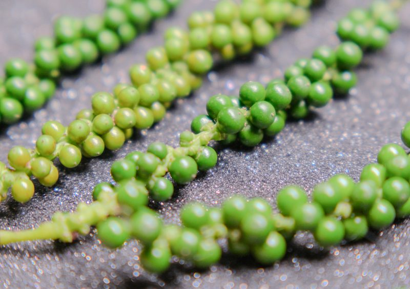
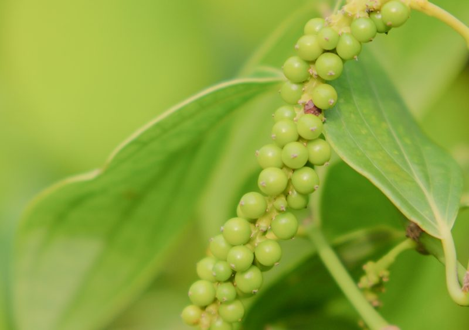
瓶のフタを開けた瞬間、
ふわっと立ち上がる爽やかな香り。
乾燥した胡椒では感じられない、
フレッシュで青々しいスパイスの香りが広がります。
それはまるで、
収穫したばかりの胡椒を
その場で手に取ったような感覚。
畑から、そのまま食卓へ
収穫される胡椒は、
枝についたままの青々とした状態。
一粒一粒を見極めながら収穫し、
鮮度を保ったまま丁寧に加工しています。
大量生産ではなく、
人の手で大切に育てられているからこそ生まれる
みずみずしい香りと味わい。
この胡椒には、畑の空気と作り手の想いが詰まっています。
problem
「こんなギフトのお悩み
ありませんか？」
食通の方への贈り物は、
意外と難しい。
ワインやお肉は好みが分かれ、
定番すぎると印象に残らない。
replacement scheme
でも、せっかく贈るなら「ちゃんと選んだ」と伝わるものを。
この生胡椒スパイスは、味だけでなく背景や希少性まで語れるギフトです。
良いお肉など素材の輪郭を際立たせるスパイスです。
なぜ“食通に刺さる”のか
このスパイスが特別な理由は、「国産 × 生胡椒」という希少性。
日本国内で胡椒を育てること自体が珍しく、
さらに生の状態で加工・流通させるのは非常に難しいとされています。
だから、ほぼ市場に出回らない。
食通が“まだ知らない”
――その一点だけでも、ギフトとして十分な価値があります。
一流が静かに認めている理由
この胡椒を手がける生産者は、
メディアにはほとんど
登場しません。
それでも、宮崎県内の
高級ステーキ店でも採用されるなど、
味に厳しいプロが評価しています。
料理の主役にならず、
素材の輪郭を引き立てる。
その“使いどころの美しさ”が、
静かに選ばれています。
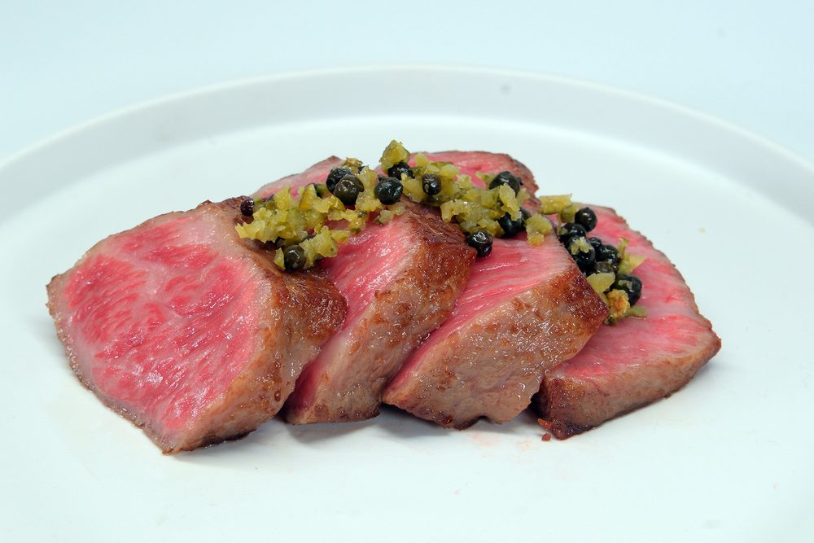
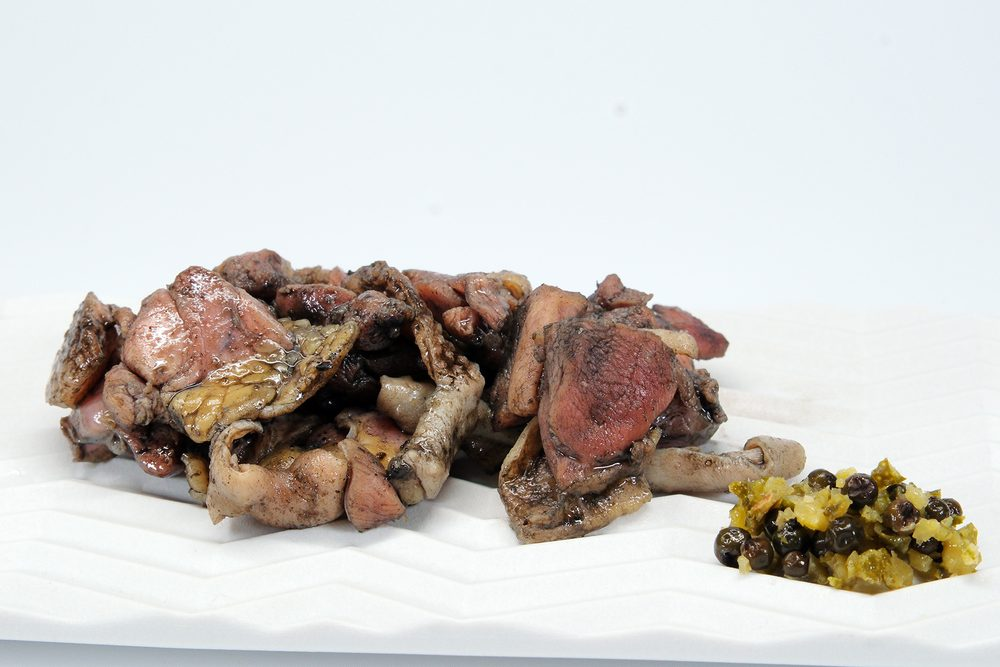
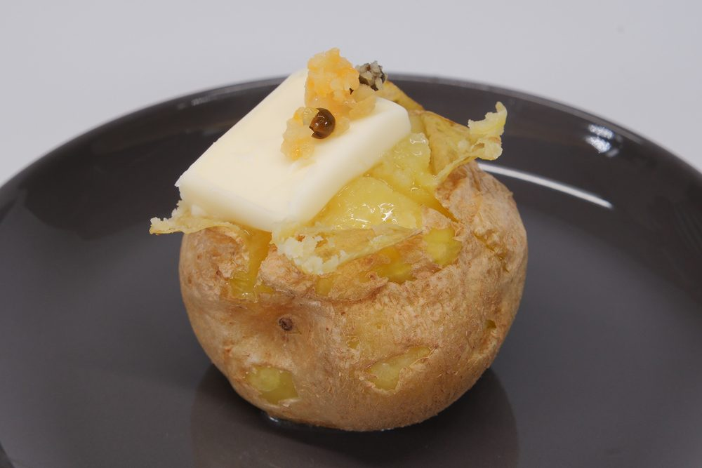
ご購入はこちらから
公式オンラインストア柚子／レモンの違いと楽しみ方
YUZU
和食に、香りの余韻を。
プチッと弾ける生胡椒の爽やかな辛みに、宮崎県産柚子の上品で奥行きのある香り。
料理の仕上げにひとさじ添えるだけで、素材の旨みを引き立て、いつもの一皿に豊かな香りと余韻を添えます。
宮崎牛や地鶏などの肉料理はもちろん、刺身やカルパッチョ、焼き魚、天ぷら、湯豆腐、鍋料理、蕎麦やうどんまで。
和食を中心に、素材そのものの味を楽しむ料理との相性が魅力です。
おすすめのひとさじ
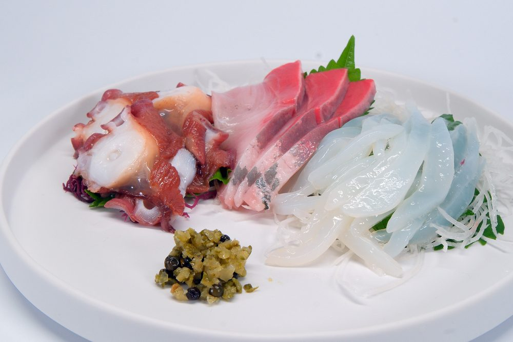
LEMON
肉と洋食に、
爽やかなアクセントを。
みずみずしい生胡椒の辛みと芳醇な香りに、宮崎県産レモン皮の爽やかで気品ある香りをプラス。
仕上げにひとさじ添えることで、料理を重くせず、素材の旨みを引き立てながら爽やかな余韻を残します。
宮崎牛のステーキやグリルチキンはもちろん、白身魚のカルパッチョ、帆立や海老、牡蠣、パスタ、チーズ、グリル野菜まで。
肉料理や魚介、オリーブオイル、チーズなど、洋の食材と合わせやすいのがLEMONの魅力です。
おすすめのひとさじ
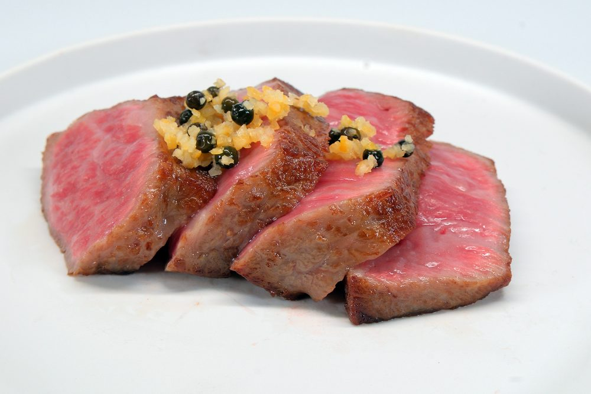
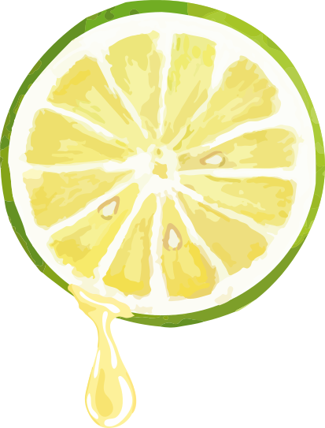
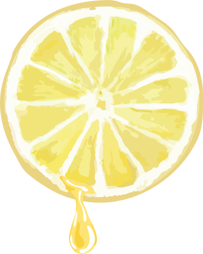
柚子は、魚や和の料理に。
レモンは、肉や脂のある料理に。
どちらも主役は生胡椒。
柑橘は香りを添える存在です。
ステーキにひと振り。
白身魚に添えて。
「今日はどっちにする？」
そんな会話が生まれます。
ご購入はこちらから
公式オンラインストアギフトとして選ばれる理由
国産の生胡椒。
ほぼ流通しない希少性。
一流が認める品質。
それでいて、1本1,800円、
2本セットでも3,600円。
消えものだから相手に気を遣わせず、
でも印象には強く残る。
大人のギフトとして、
ちょうどいい選択です。
なぜ、Miyazaki Fresh Pepper
を贈りたくなるのか。
-
01
宮崎だからこそ生まれた、ちょっと特別なものだから。
宮崎で育った希少な生胡椒に、
宮崎県産の柚子やレモン。
ありふれた調味料ではなく、
土地の魅力まで一緒に贈れる一品です。 -
02
これ、何？」から会話が始まる、新しいおいしさだから。
一般的な柚子胡椒（青唐辛子の事を胡椒と呼びます）
とは違い、本物の生胡椒を使用。
プチッと弾ける食感とフレッシュな香りは、
食べた瞬間にちょっとした驚きを生みます。 -
03
贈ったその先に、食卓の楽しみが広がるから。
肉料理や刺身、鍋、豆腐、麺、
パスタ、チーズまで。
いつもの料理にひとさじ添えるだけで、
新しい味わいに。
使うたびに発見がある、
贈ったあとまで楽しめるギフトです。
ご購入はこちらから
公式オンラインストア商品紹介
柚子
yuzu
1,800円
- 名称：
- ゆずこしょう
- 原材料：
- ゆず皮（宮崎県産）、食塩
- 内容量：
- 20g
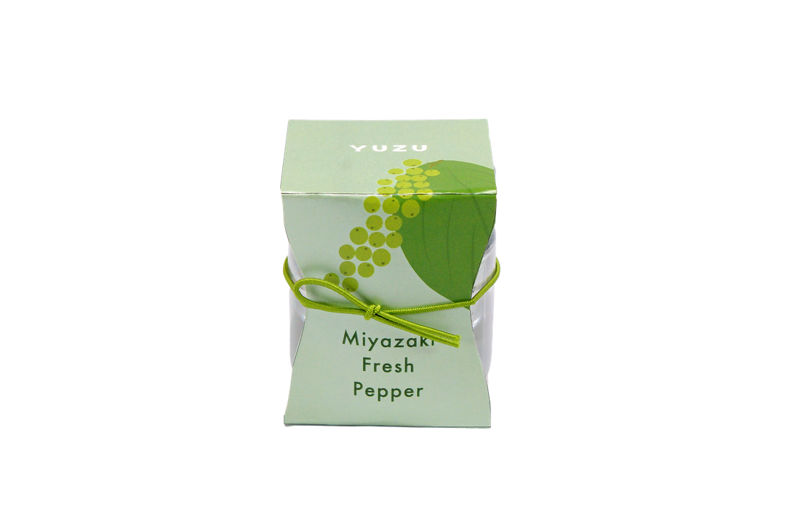
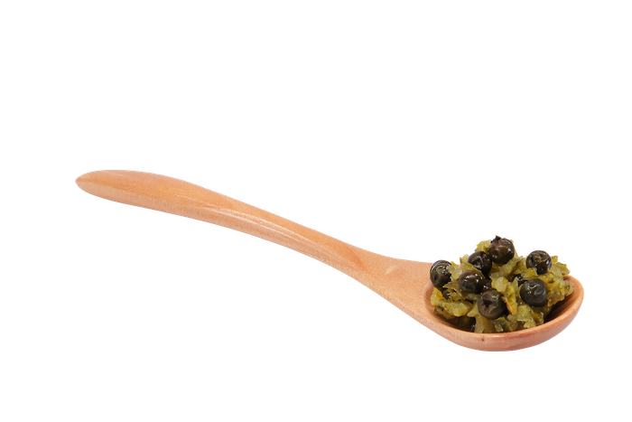
内容量：20g
レモン
lemon
1,800円
- 名称：
- レモンこしょう
- 原材料：
- レモン皮（宮崎県産）、食塩
- 内容量：
- 20g
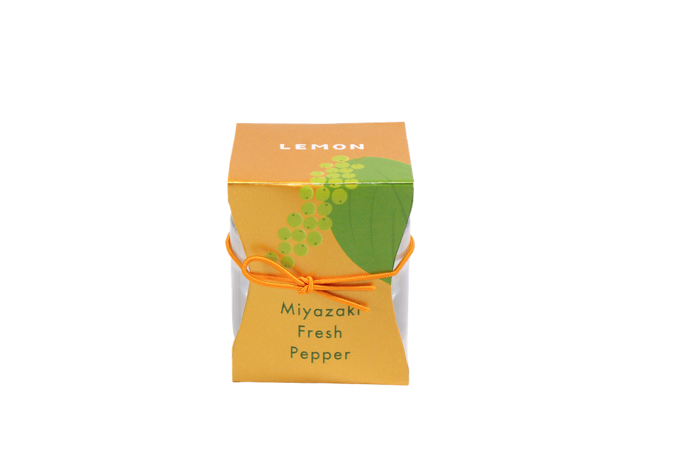
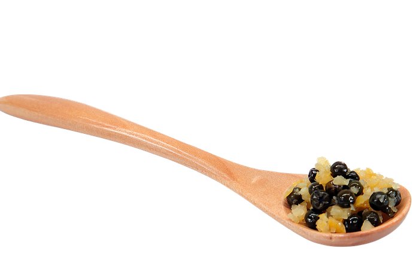
内容量：20g
ご購入はこちらから
公式オンラインストア『やお九州』は、
宮崎の旬を届けて15年。
野菜の目利きとして、宮崎県産の野菜を中心に全国へ届けてきました。
生胡椒はその経験のなかでも衝撃的な出会いでした。
究極の一品といえます。
販売者：株式会社yao
宮崎県宮崎市池内町崎ノ湯1205